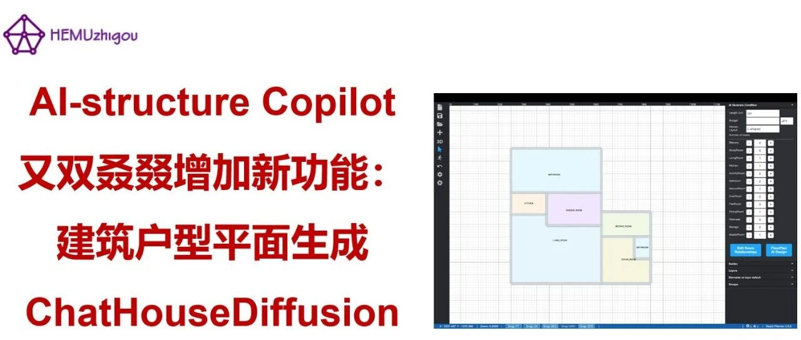

AI-structure Copilot 又双叒叕增加新功能：建筑户型平面生成ChatHouseDiffusion


引言

亲爱的新老朋友们，快过年啦！先给大家拜个早年，祝马年马上开心，马到成功！

上一期我们给大家介绍了”HouseMind：建筑户型平面生成与编辑平台（详见：AI-structure Copilot 新功能：建筑平面布置一键搞定！）“，可以实现建筑户型空间的划分，且AI可以根据工程师指令进行相应的修改和调整。今天，AI-structure Copilot又双叒叕增加新功能，向大家介绍”ChatHouseDiffusion：建筑户型平面生成与3D展示平台“，欢迎各位用户试用！
ChatHouseDiffusion操作视频(一分钟)

1. "ChatHouseDiffusion：建筑户型平面生成与3D展示平台"上线
ChatHouseDiffusion：建筑户型平面生成与3D展示平台已在我们的官网上线（https://ai-structure.com/#/IntelligentDesignLabs）（图1）。该产品基于生成式扩散模型 + 优化算法，实现户型平面生成与 3D 展示一体化，快速完成用户抽象需求到建筑实体空间的转化，提供高效直观的建筑设计数字化解决方案。该方法的理论基础参阅：建筑平面您说咋改就咋改，剩下的都交给AI了｜新论文：ChatHouseDiffusion：提示词引导的建筑平面图生成与编辑方法

图1 ChatHouseDiffusion：建筑户型平面生成与3D展示平台
用户仅需勾勒建筑轮廓、设定空间关系，ChatHouseDiffusion即可基于设置的房间类型自动生成户型布局，并支持全流程实时交互微调，一键切换 3D 沉浸式预览。该平台操作简便，既能大幅缩短专业设计师初稿周期，也让非专业用户零门槛完成建筑设计创作。
2. ChatHouseDiffusion使用介绍


2.1 软件界面介绍

图2展示了“建筑户型平面生成与3D展示平台”的网页页面，左侧为常规功能栏，右侧为设计功能栏。

图2 操作界面
（1）用户可通过平台左侧的“常规工具栏”完成新建/保存/加载项目、新建构件（包括墙体、门、家具等）、2D/3D/第一视角切换、撤销、截图等操作。
（2）用户可通过平台右侧的“户型设计栏”定义房间类型、数量以及房间之间的连接关系，并启动AI设计。
2.2 建筑外轮廓绘制
通常在进行户型布局设计时，建筑外轮廓形状已经确定，用户可以根据实际的建筑平面外轮廓，在画布上绘制该轮廓，作为户型平面设计的基础，具体操作步骤如下（图3）：
（1）点击新建构件功能，进入构件选择界面（左侧导航栏的“+”图标），点击墙体以绘制建筑外墙；
（2）在画布界面空白处通过单击鼠标拾取坐标点，实现墙体的绘制，注意墙体绘制只支持直线；
（3）根据所需建筑平面，在画布上依次按需求绘制建筑外墙。

图3 建筑外轮廓绘制
2.3 设置房间数量
建筑外墙轮廓绘制完成后，可在平台右侧的“户型设计栏”设置所需的房间种类和数量。点击对应房间名称后的“+”按钮即可增加该房间数量，“-”按钮即可减少该房间数量，如图4所示。

图4 设置房间数量
2.4 设置房间连接关系
完成房间类型和数量的设置后，点击编辑房间邻接关系按钮，即显示各房间数量设置对应的房间气泡。用户点击“Add Connection”按钮，即进入连接关系添加模式，鼠标左键单击需要添加邻接关系的两个房间对应的气泡，即可为选中的两个房间添加邻接线，如图5所示。

图5 房间邻接关系连线添加
若需要删除两个房间之间的邻接关系，用户只需点击“Delete Connection”按钮，进入邻接线删除模式，再鼠标左键单击需要删除的邻接线上显示的红色叉号，即可删除该邻接线，如图6所示。

图6 房间邻接关系连线删除
2.5 AI设计及结果展示
完成建筑外墙轮廓绘制、各房间数量及房间之间的邻接关系的设置后，用户可点击“FloorPlan AI Design”，程序即进入智能设计模式，耗时约10分钟。模型设计完成后，设计结果即自动显示于画布界面，如图7所示。

图7 户型生成结果（2D显示）
用户可以通过平台左侧“常规功能栏”的3D视角按键，切换展示方式，切换后展示效果如图8所示。

图8 3D视角的设计结果展示
结语
后续，我们还将不断完善相关产品功能。欢迎大家持续关注我们的工作，多多支持！
温馨提示：为更好地使用AI设计工具，请仔细阅读使用说明书
联系方式：
用户交流QQ群
AI-structure-交流1群：741840451【已满】
AI-structure-交流2群：1053974604
商务问题请联系
技术问题请联系

--End--
AI-structure Copilot 新功能：建筑平面布置一键搞定！(20260209)
4000+！AI-structure Copilot再破纪录，助力设计提速(20260123)
AI-structure.com 2025年年终总结(20251226)
AI-structure Copilot兼容Revit(20251211)
中望与清华大学联合研发，推出国产CAD平台首款生成式结构设计AI助手(20251210)
AI-structure Copilot兼容中望CAD(20251120)
3500个实际工程！AI-structure Copilot加速进步(20251027)
手把手教你使用AIstructure-Copilot-V0.4.0的新功能：(2) 剪力墙结构智能设计与优化(20250913)
手把手教你使用AIstructure-Copilot-V0.4.0的新功能：(1) 基于智能识图的CAD图纸前处理(20250912)
AIstructure-Copilot-V0.3.9：框架和框架-核心筒智能设计模块增加一键导出PKPM/YJK模型功能(20250828)
AIstructure-Copilot-V0.3.7：框架结构智能设计新增半框梁和次梁智能设计功能，软件用户界面设计更新(20250703)
2500→3000！AIstructure用户设计项目数突破3000个(20250609)
AIstructure-Copilot-V0.3.6：新增框架结构智能设计功能(20250606)
AIstructure用户设计项目数突破2500个！(20250314)
论文：生成式智能结构设计在建筑投标中的应用案例(20250218)
大家一起玩AI | AIstructure-API开放生态秀：基准方中参数化工具TigerKin实现智能生成设计(20250212)
AI-structure.com 2024年终总结(20241228)
0→2000！AIstructure用户设计项目突破2000个(2024/12/02)
独AI不如众AI，AIstructure二次开发接口API开放试用！(20241104)
AIstructure-Copilot V0.3.0 增加图层自动提取功能，墙梁联合优化改进设计效果(20241018)
AIstructure官网全面升级，英文版上线(20240909)
AIstructure-Copilot-V0.2.9 梁布置设计算法改进(20240830)
AIstructure-Copilot-v0.2.8软件全过程操作演示视频(20240809)
AIstructure-Copilot-V0.2.8软件使用温馨小贴士(20240726)
结构生成式智能设计AI-structure 2024上半年小结(20240628)
AIstructure-Copilot-v0.2.7技术背景（1）：基于PKPM API的自动化建模和计算分析(20240522)
AIstructure-Copilot-v0.2.7：新增后处理功能，云端完成PKPM结构计算和AIstructure优化(20240520)
AIstructure-Copilot-v0.2.6：给马儿换上精饲料，AIstructure设计效果持续改善(20240511)
AIstructure-Copilot-v0.2.2：梁布置设计功能更新(20240308)
AIstructure-Copilot-v0.1.7功能更新：实现多标准层的PKPM/YJK自动建模(20231222)
AIstructure-Copilot实现“三驾马车”驱动：Diffusion Model智能设计上线！(20231103)
AIstructure-Copilot-v0.1.2更新：精细化考虑抗震设计条件影响的全新GNN版本，请您来试试(20230928)
ai-structure.com：剪力墙结构材料用量AI预测模块上线测试(20230731)
AIstructure-Copilot：嵌入CAD平台的结构智能设计助手(20230711)
建筑结构生成式智能设计在日内瓦国际发明展上获“评审团特别嘉许金奖”(20230519)
ai-structure.com：土木工程自然语言规则AI解译模块上线测试(20230513)
AI剪力墙设计问卷调查结果(20230508)
相关论文
Liao WJ, Lu XZ, Huang YL, Zheng Z, Lin YQ, Automated structural design of shear wall residential buildings using generative adversarial networks, Automation in Construction, 2021, 132: 103931. DOI: 10.1016/j.autcon.2021.103931.
Lu XZ, Liao WJ, Zhang Y, Huang YL, Intelligent structural design of shear wall residence using physics-enhanced generative adversarial networks, Earthquake Engineering & Structural Dynamics, 2022, 51(7): 1657-1676. DOI: 10.1002/eqe.3632.
Zhao PJ, Liao WJ, Xue HJ, Lu XZ, Intelligent design method for beam and slab of shear wall structure based on deep learning, Journal of Building Engineering, 2022, 57: 104838. DOI: 10.1016/j.jobe.2022.104838.
Liao WJ, Huang YL, Zheng Z, Lu XZ, Intelligent generative structural design method for shear-wall building based on “fused-text-image-to-image” generative adversarial networks, Expert Systems with Applications, 2022, 118530, DOI: 10.1016/j.eswa.2022.118530.
Fei YF, Liao WJ, Zhang S, Yin PF, Han B, Zhao PJ, Chen XY, Lu XZ, Integrated schematic design method for shear wall structures: a practical application of generative adversarial networks, Buildings, 2022, 12(9): 1295. DOI: 10.3390/buildings1209129.
Fei YF, Liao WJ, Huang YL, Lu XZ, Knowledge-enhanced generative adversarial networks for schematic design of framed tube structures, Automation in Construction, 2022, 144: 104619. DOI: 10.1016/j.autcon.2022.104619.
Zhao PJ, Liao WJ, Huang YL, Lu XZ, Intelligent design of shear wall layout based on attention-enhanced generative adversarial network, Engineering Structures, 2023, 274: 115170. DOI: 10.1016/j.engstruct.2022.115170.
Zhao PJ, Liao WJ, Huang YL, Lu XZ, Intelligent beam layout design for frame structure based on graph neural networks, Journal of Building Engineering, 2023, 63, Part A: 105499. DOI: 10.1016/j.jobe.2022.105499.
Zhao PJ, Liao WJ, Huang YL, Lu XZ, Intelligent design of shear wall layout based on graph neural networks, Advanced Engineering Informatics, 2023, 55:101886, DOI: 10.1016/j.aei.2023.101886
Liao WJ, Wang XY, Fei YF, Huang YL, Xie LL, Lu XZ, Base-isolation design of shear wall structures using physics-rule-co-guided self-supervised generative adversarial networks, Earthquake Engineering & Structural Dynamics, 2023, 52(11): 3281-3303. DOI:10.1002/eqe.3862.
Feng YT, Fei YF, Lin YQ, Liao WJ, Lu XZ, Intelligent generative design for shear wall cross-sectional size using rule-embedded generative adversarial network, Journal of Structural Engineering-ASCE, 2023, 149(11). 04023161. DOI:10.1061/JSENDH.STENG-12206.
Fei YF, Liao WJ, Lu XZ, Guan H, Knowledge-enhanced graph neural networks for construction material quantity estimation of reinforced concrete buildings, Computer-Aided Civil and Infrastructure Engineering, 2024, 39(4): 518-538. DOI: 10.1111/mice.13094.
Zhao PJ, Fei YF, Huang YL, Feng YT, Liao WJ, Lu XZ, Design-condition-informed shear wall layout design based on graph neural networks, Advanced Engineering Informatics, 2023, 58: 102190. DOI: 10.1016/j.aei.2023.102190.
Fei YF, Liao WJ, Lu XZ, Taciroglu E, Guan H, Semi-supervised learning method incorporating structural optimization for shear-wall structure design using small and long-tailed datasets, Journal of Building Engineering, 2023, 79: 107873. DOI：10.1016/j.jobe.2023.107873
Liao WJ, Lu XZ, Fei YF, Gu Y, Huang YL, Generative AI design for building structures, Automation in Construction, 2024, 157: 105187. DOI: 10.1016/j.autcon.2023.105187
Zhao PJ, Liao WJ, Huang YL, Lu XZ, Beam layout design of shear wall structures based on graph neural networks, Automation in Construction, 2024, 158: 105223. DOI: 10.1016/j.autcon.2023.105223
Qin SZ, Liao WJ, Huang SN, Hu KG, Tan Z, Gao Y, Lu XZ, AIstructure-Copilot: assistant for generative AI-driven intelligent design of building structures, Smart Construction, 2024, DOI: 10.55092/sc20240001
Gu Y, Huang YL, Liao WJ, Lu XZ, Intelligent design of shear wall layout based on diffusion models, Computer-Aided Civil and Infrastructure Engineering, 2024, 39(23):3610-3625. DOI: 10.1111/mice.13236
Fei YF, Liao WJ, Zhao PJ, Lu X*, Guan H, Hybrid surrogate model combining physics and data for seismic drift estimation of shear-wall structures, Earthquake Engineering & Structural Dynamics, 2024, 53(10): 3093-3112. DOI: 10.1002/eqe.4151
Han J, Lu XZ, Gu Y, Cai Q, Xue HJ, Liao WJ, Optimized data representation and understanding method for the intelligent design of shear wall structures, Engineering Structures, 2024, 315: 118500. DOI: 10.1016/j.engstruct.2024.118500
Qin SZ, Guan H, Liao WJ, Gu Y, Zheng Z, Xue HJ, Lu XZ, Intelligent design and optimization system for shear wall structures based on large language models and generative artificial intelligence, Journal of Building Engineering, 2024, 95: 109996. DOI: 10.1016/j.jobe.2024.109996
Wang ZH, Yue Y, Chen Y, Liao WJ, Li CS, Hu KG, Tan Z, Lu XZ. Expert experience-embedded evaluation and decision-making method for intelligent design of shear wall structures. Journal of Computing in Civil Engineering-ASCE, 2025, 39(1). DOI: 10.1061/JCCEE5.CPENG-6076
Tan Z, Qin SZ, Hu KG, Liao WJ, Gao Y, Lu XZ, Intelligent generation and optimization method for the retrofit design of RC frame structures using buckling-restrained braces, Earthquake Engineering & Structural Dynamics, 2025, 54(2): 530-547. DOI: 10.1002/eqe.4268
Yu Y, Chen Y, Liao WJ, Wang ZH, Zhang SL, Kang YJ, Lu XZ, Intelligent generation and interpretability analysis of shear wall structure design by learning from multidimensional to high-dimensional features, Engineering Structures, 2025, 325: 119472. DOI: 10.1016/j.engstruct.2024.119472
Qin SZ, Liao WJ, Huang YL, Zhang Shulu, Gu Y, Han J, Lu XZ, Intelligent design for component size generation in reinforced concrete frame structures using heterogeneous graph neural networks, Automation in Construction, 2025, 171: 105967.
Xia JK, Liao WJ, Han B, Zhang SL, Lu XZ, Intelligent co-design of shear wall and beam layouts using a graph neural network, Automation in Construction, 2025, 172: 106024.
Qin SZ, Liao WJ, Tan Z, Hu KG, Gao Y, Lu XZ, Comparative analysis of intelligent retrofit design methods of RC frame structures using buckling-restrained braces. Bulletin of Earthquake Engineering, 2025, DOI: 10.1007/s10518-025-02164-3
Liao WJ, Zhang ZL, Liu B, Lu XZ, Liu DF, Liu Q, Duan ZJ, Liu C, Intelligent zoning design of concrete-faced rockfill dams using image-parameter fusion enhanced generative adversarial networks, Engineering Structures, 2025, 339: 120662. DOI: 10.1016/j.engstruct.2025.120662
Qin SZ, Fei YF, Liao WJ, Lu XZ*, Leveraging data-driven artificial intelligence in optimization design for building structures: A review, Engineering Structures, 2025, 341: 120810. DOI: 10.1016/j.engstruct.2025.120810
Fei YF, Lu XZ, Liao WJ, Guan H, Data enhancement for generative AI design of shear wall structures incorporating structural optimization and diffusion models, Advances in Structural Engineering, 2025, DOI: 10.1177/13694332251353614
Gu Y, Qin SZ, Liao WJ, Lu XZ*, Intelligent design of dimensions of reinforced concrete frame structure components using diffusion models, Computers in Industry, 2026, 175: 104428. DOI: 10.1016/j.compind.2025.104428

学术报告视频
论文和专利